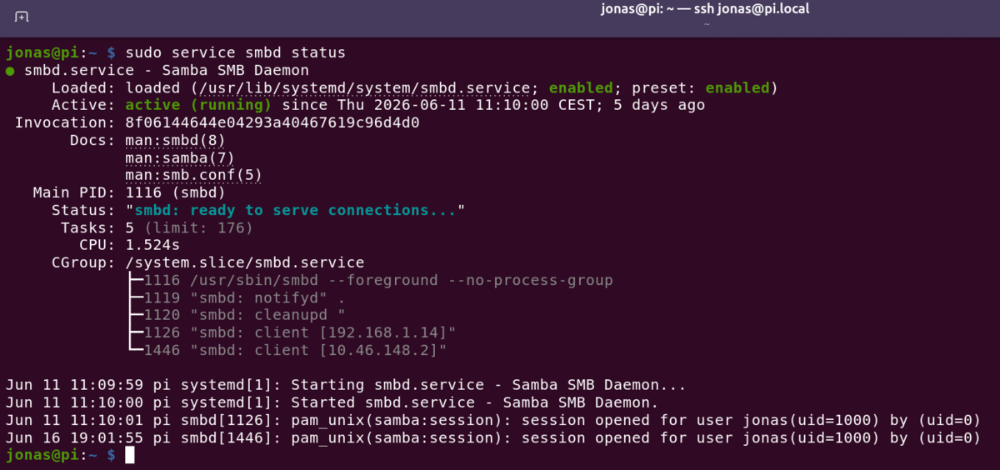
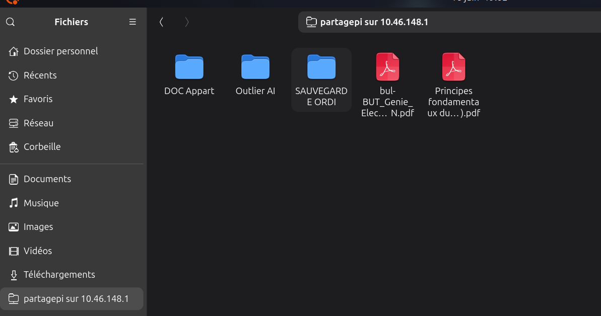

Projet personnel | Réseau, Linux & Raspberry Pi
Afin de mieux comprendre l'administration réseau et la gestion des serveurs, j'ai mis en place un serveur de stockage en réseau (NAS) local sécurisé. L'objectif était de pouvoir centraliser mes fichiers importants de manière autonome et d'y avoir accès depuis n'importe quel poste de mon domicile.
Ce projet a été réalisé en utilisant un nano-ordinateur Raspberry Pi. Toute la configuration a été effectuée en ligne de commande (CLI) sous environnement Linux. J'ai configuré le protocole Samba via le terminal pour gérer finement les droits d'accès des utilisateurs et les règles de partage de fichiers sur le réseau Windows/Linux.

